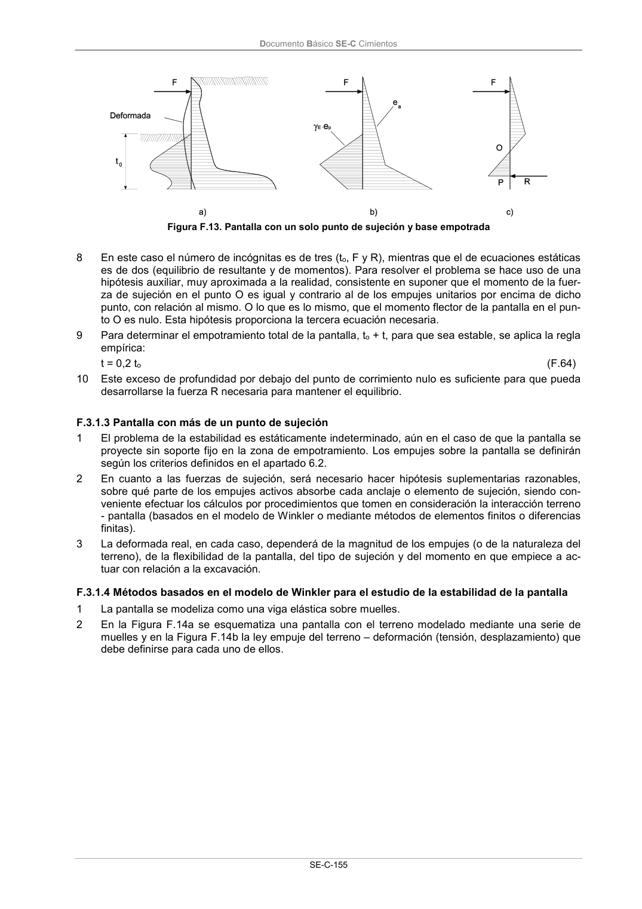

DB-SE-C Cimientos · edición 2019-12-20 · capa oficial
Documento DB-SE-C-oficial · SHA-256 del PDF a71133f4b0dca253e45ea3071c70f2a512354bcc5cd841bf89b1a502f567ac5e
Página física 160 de 165.
Copia fiel del PDF fuente · Fuente oficial
Ficha de la disposición en la fuente oficial
Formato: Texto de la página (Markdown)
Documento Básico SE-C Cimientos
SE-C-155
Figura F.13. Pantalla con un solo punto de sujeción y base empotrada
8
En este caso el número de incógnitas es de tres (to, F y R), mientras que el de ecuaciones estáticas
es de dos (equilibrio de resultante y de momentos). Para resolver el problema se hace uso de una
hipótesis auxiliar, muy aproximada a la realidad, consistente en suponer que el momento de la fuer-
za de sujeción en el punto O es igual y contrario al de los empujes unitarios por encima de dicho
punto, con relación al mismo. O lo que es lo mismo, que el momento flector de la pantalla en el pun-
to O es nulo. Esta hipótesis proporciona la tercera ecuación necesaria.
9
Para determinar el empotramiento total de la pantalla, to + t, para que sea estable, se aplica la regla
empírica:
t = 0,2 to
(F.64)
10
Este exceso de profundidad por debajo del punto de corrimiento nulo es suficiente para que pueda
desarrollarse la fuerza R necesaria para mantener el equilibrio.
F.3.1.3 Pantalla con más de un punto de sujeción
1
El problema de la estabilidad es estáticamente indeterminado, aún en el caso de que la pantalla se
proyecte sin soporte fijo en la zona de empotramiento. Los empujes sobre la pantalla se definirán
según los criterios definidos en el apartado 6.2.
2
En cuanto a las fuerzas de sujeción, será necesario hacer hipótesis suplementarias razonables,
sobre qué parte de los empujes activos absorbe cada anclaje o elemento de sujeción, siendo con-
veniente efectuar los cálculos por procedimientos que tomen en consideración la interacción terreno
- pantalla (basados en el modelo de Winkler o mediante métodos de elementos finitos o diferencias
finitas).
3
La deformada real, en cada caso, dependerá de la magnitud de los empujes (o de la naturaleza del
terreno), de la flexibilidad de la pantalla, del tipo de sujeción y del momento en que empiece a ac-
tuar con relación a la excavación.
F.3.1.4 Métodos basados en el modelo de Winkler para el estudio de la estabilidad de la pantalla
1
La pantalla se modeliza como una viga elástica sobre muelles.
2
En la Figura F.14a se esquematiza una pantalla con el terreno modelado mediante una serie de
muelles y en la Figura F.14b la ley empuje del terreno – deformación (tensión, desplazamiento) que
debe definirse para cada uno de ellos.
